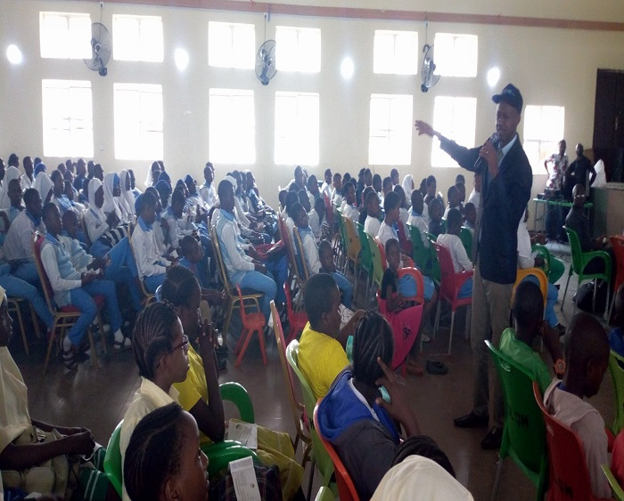

The institutionalization of the barracks makes it seemingly a closed community, due to the fact that serving personnel and members of their families seldom have reasons to interact with the civilian communities outside the barracks. Reason being that almost all social amenities necessary for sustainable living are provided within the walls of the barracks. The presence of schools, clinics, markets, places of work and worship for serving personnel and their families within the barracks makes it harder for barracks youths to interact, share knowledge and ideas as well as best practices with other youths or groups from outside communities. Besides these, there has always been a negative perception and stigma attached to youths in the barracks, hence an unruly and ill mannered person is usually termed a “barrack boy or barrack girl” this stigma has affected the self esteem and confidence of many young people in the barracks making it difficult for them to stand interact with their peers outside the barracks communities. This is why the Barracks Youths and Adolescents Network is set up, to empower adolescents and young people in the barracks while bridging the gap between the barracks and outside world for them.
About Us
Barracks Youths and Adolescents Network - BYAN is a youth focused Organization based in Mogadishu Cantonment and registered with the Corporate Affairs Commission (CAC) with Registration number CAC/IT/NO/128235. We aim to provide all-round development and empowerment for adolescents and young people in the Barracks communities.
What do we aim for?
Our Vision, Mission and Objectives.
Mission
To educate, inspire and equip adolescents and young people in Military Barracks and neighboring communities with accurate information, skills and tools to enable them live healthy, focused and productive lives.
Vision
Empowered Barrack Youths making informed choices and impacting their community positively.
Values
Our core values include;
Respect
Sacrifice
Teamwork
Innovation
Commitment
Objectives
The specific objectives and aim of setting up this network is to;
Enhance self esteem of barracks youths to project and portray positive image of themselves as well as the barracks community to the outside world;
Enable young people in the barracks to make informed choices about their health behaviour through information, education and skills development;
Provide positive experiences for young people in the barracks which would contribute towards their personal development;
Raise awareness of policies that impact young people, encourage critical thinking and participation, and develop policy recommendations from the barracks youth angle;
Linkage with sustainable global network of youth organizations to form alliance and share good practices.
Projects
Since inception, BYAN has carried out various intervention programs aimed at building the capacity and empowering youths and adolescents in the Barracks (Mogadishu Cantonment). Some of the Activities, trainings and workshops engaged in since inception includes:-
World Tuberculosis Day 2018 Commemoration
HIV and Diabetes Awareness/Testing Services at Nyanya Gwandara
Youth/Adolescents SRHR Advocacy Capacity Building Training by Ipas Nigeria
Drugs and Substance Abuse Prevention Workshop
World AIDS Day 2018 Commemoration
#iSabiHIV campaign at National Sport Festival, Abuja 2018
Menstrual Hygiene Day Commemoration 2019
World AIDS Day 2019 HIV Testing Services Campaign
Club Tripple Zero Project
World Tuberculosis Day
BYAN in collaboration with the Defence Headquarters Medical Center, Mogadishu Cantonment with support from Nigerian Ministry of Defence-Health Implementation Program (NMoD-HIP) participated in a one-day awareness and sensitization campaign within the barracks. This was conducted in commemoration of the World Tuberculosis Day 2018. The activity was held on 24th of March 2018 with rallies and health talks provided to members of the barracks community.
Date: March 2018
Client: Nigerian Ministry of Defence-Health Implementation Program (NMoD-HIP)
HIV and Diabetes Awareness / Testing Services at Nyanya Gwandara
The Barracks Youths and Adolescents Network conducted an awareness and sensitization outreach on HIV/AIDS and Diabetes to Angwan Soja in Nyanya Gwandara, Nasarawa State (a community of retired military personnel and their families). The activities included health talk on diabetes and HIV/AIDS prevention, treatment and support services. Free testing for both diabetes and HIV was also provided for members of the community with support from AIDS Healthcare Foundation (AHF) who provided HIV test kits and Creative Visions Development Foundation provided FREE diabetes testing services. The activity was conducted on the 3rd April, 2018.
Date: April 2018
Client: AIDS Healthcare Foundation (AHF) & Creative Vision Development Foundation
Youth/Adolescents SRHR Advocacy Capacity Building Training by Ipas Nigeria
As part of her efforts to build the capacity of young people including adolescents in SRHR issues, an advocacy and leadership, Ipas conducted a workshop program for young leaders and advocates titled: "Building Capacities of Young Leaders on Advocacy and Leadership on Sexual and Reproductive Health and Rights issues". BYAN program staff were part of the training which was held from 4th – 7th April, 2018
Date: April 2018
Client: Ipas
Drugs and Substance Abuse Prevention Workshop

The organization in collaboration with YouthRise Nigeria and with funding support from Ministry of Defence Health Implementation Programme organized a 2 – day’s workshop on Drugs and Substance abuse prevention for youths within the Mogadishu Cantonment. The Workshop had resource person from YouthRise Nigeria, Students for Sensible Drugs Policy and Drugs Harm Reduction Network and was held from 16-17th October, 2018.
Date: October 2018
Client: YouthRise Nigeria & MODHIP
World AIDS Day 2018 Commemoration
In partnership with the Defence Headquarters Medical Center and support from NMoD HIP, we engaged in rally within the barracks and mammy market to sensitize the community about HIV/AIDS and promote HIV testing services. Part of the activities we conducted was a painting/drawing contest for adolescents and young people in the barracks on the theme of the celebration “Know Your Status”. The winner was presented with cash prize and a plaque. HIV counseling and testing was also conducted by BYAN and the medical center staff.
Date:December 2018
Client: MODHIP & Defence Headquarters Medical Center
#iSabiHIV Campaign at National Sports Festival, Abuja 2018
The Sports Festival which held in Abuja, Nigeria from 6th to 16th December, 2018 presented a unique opportunity to amplify the National HIV Prevention Campaign for Adolescents and Young People (AYP) tagged #iSabiHIV campaign. The campaign reached young athletes as well as spectators with HIV/AIDS and SGBV prevention messages while driving demand for HIV testing services (HTS). BYAN was contracted to coordinate the UNICEF supported component of the campaign. We conducted Inter personal communication (IPC) sessions, condom distribution and demonstration while also generating demand for HTS which was provided within the stadium premises for participants and spectators. Other activities included HIV knowledge quiz, dance contests, condom use contests and social media activities promoting the campaign and engaging with target audience online.
Date:December 2018
Client:UNICEF
World AIDS Day 2019 HIV Testing Services Campaign
Every year, the World AIDS Day campaign is with a specific theme. This year‘s theme was Communities make the difference. Communities refer to networks of people living with HIV, Civil Society Organizations, Counselors, Educators and Community Health Workers.
BYAN was supported by theInternational Labour Organization (ILO) Nigeria Country Office through the National Agency for the Control of AIDS (NACA) in Marking WAD 2019 with HIV Testing Services in various sites and communities within the FCT. This was an opportunity to conduct outreach activities to those with limited access to these services as well as expansion of access to comprehensive care for those identified as positive. The HIV testing service provision is an entry point to prevention, treatment, care and support services.
In conducting this project, advocacy visits were made to the Chairman and other Executives of the motor parks and mechanic villages in seven (7) locations as well as to the Chiefs of two (2) semi-urban communities within Abuja; to accelerate efforts towards preparation and implementation of the HTS activities in line with the agreed date.
HIV Testing Services and Multi disease outreach were conducted in the following locations
Seven (7) Informal sectors: This year’s WAD was focused on men thus four (4) Motor parks and three (3) Mechanic villages were reached in – Zuba (2), Deidei (1), Apo (1), Jabi (1), Mararaba (1) and Nyanya (1).
Multi- disease outreach in two (2) semi-urban communities – Dakibiu and Dawaki villages.
Date:December 2019
Client: International Labour Organization (ILO) & National Agency for the Control of AIDS (NACA)
Club Tripple Zero Project
This is an ongoing project of the organization. Club Triple Zero - CTZ is an initiative which seeks to empower adolescents and young people living with HIV (AYPLHIV) in the barracks to be in charge of their own treatment and commit to the triple zero outcomes - zero missed appointment, zero missed drugs and zero viral load modeled after the Operation Triple Zero - OTZ in Kenya. CTZNg initiative is being pilot tested at the Defense Headquarters (DHQ) Medical Center, Mogadishu Cantonment a HIV care and treatment facility by Barracks Youths and Adolescents Network – BYAN.
The aim of the project is to expand on the CTZ pilot and empower Adolescents and Young People Living with HIV (AYPLHIV), as well as parents and caregivers of young children living with HIV, by providing a safe space and support group, where they can access all the support they need in order to live healthy, stable, positive lives. We are in partnership with both AIDS Healthcare Foundation (AHF) Nigeria and Association of Positive Youths in Nigeria (AYPIN) on some activities on this project; such as the Annual Inter-generational Hang-out which started in December, 2018. This is an annual event that brings together positive adolescents and young people and their parents/care-givers. It gives them a chance to unwind and engage in discussions that encourages communications and help them bond away from the home environment and with other kids, parents and caregivers to share best practices as well. Subsequently, plan is on for future recurrence.
We are still seeking support to sustain and expand on the Club Triple Zero project.
Menstrual Hygiene Day Commemoration 28th May, 2019
BYAN conducted a school Outreach to Army Day Junior Secondary School, Mogadishu Cantonment on the 28th of May 2019 being the Menstrual Hygiene Day according to the United Nations calendar. This day afforded us the opportunity to interact with students and educate them on menstrual health and hygiene. We received support in form of sanitary pads from AIDS Healthcare Foundation (AHF) which was distributed to the students. Activities conducted on the day were menstrual education and information, how to prepare for menstruation, menstrual hygiene and how to take care of their bodies and debunking myths and misconceptions about menstruation. After the discussions and Question and Answer sessions, the sanitary pads were distributed as well as refreshments.